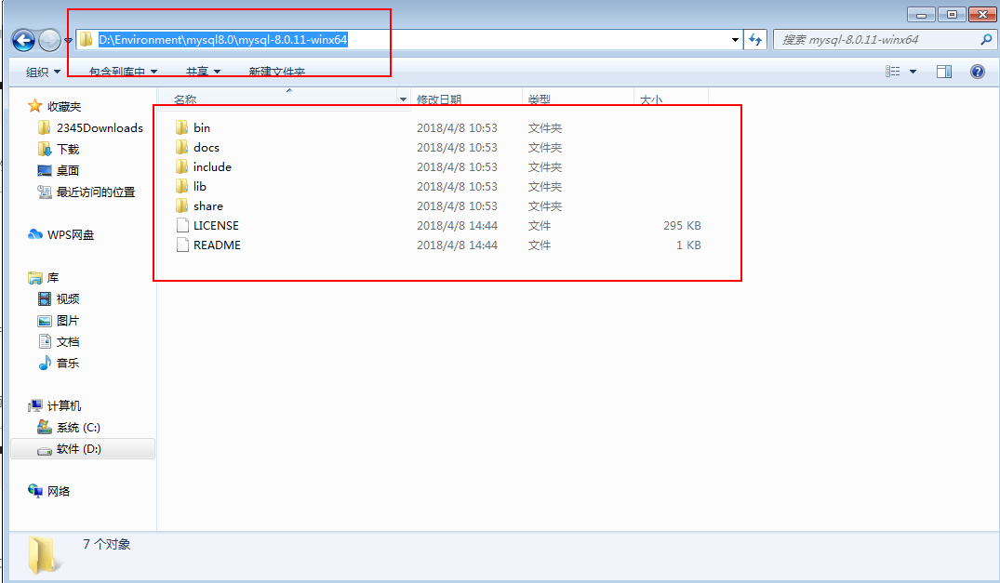
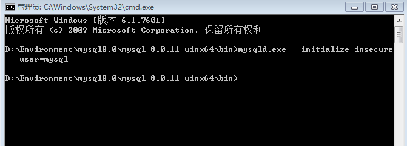
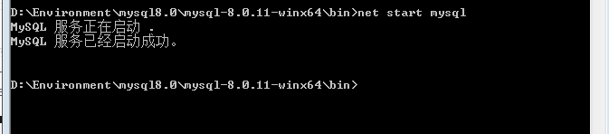
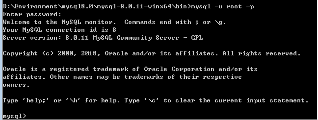

MySQL 8.0 安装
为了日后再次安装MySQL的方便，记录下在Windows下安装MySQL的过程。
MySQL 8.0 安装
MySQL 8.0.11版本百度网盘链接：
链接：https://pan.baidu.com/s/1seTjx13rXyTSYY0C5aicHA
提取码：scva
下载到本地之后，这里将其解压到本地的D:\Environment\mysql8.0\mysql-8.0.11-winx64目录，然后进入该目录。

1、创建一个空的data目录。
2、新建一个my.ini配置文件，写入以下内容：
1 | |
注意：这里的basedir和datadir填写自己的mysql安装位置即可。
3、进入到bin目录，然后在该目录下打开cmd窗口
4、在终端执行命令：
1 | |

5、执行安装命令：
1 | |

6、启动MySQL服务：
1 | |

7、终端输入命令登陆MySQL：
1 | |
提示输入密码时，直接回车即可。

8、修改root用户密码：
- 使用mysql数据库：
use mysql; - 修改密码：
alter user 'root'@'localhost' identified with mysql_native_password by 'root'; - 此时已经将密码修改成了root，再刷新权限：
flush privileges; - 执行命令
exit退出 - 使用登陆命令以及新密码重新登陆即可。
本博客所有文章除特别声明外，均采用 CC BY-SA 4.0 协议 ，转载请注明出处！